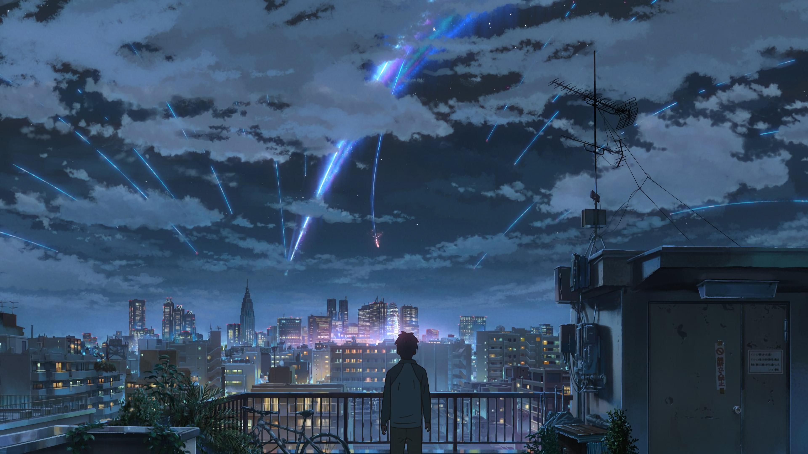
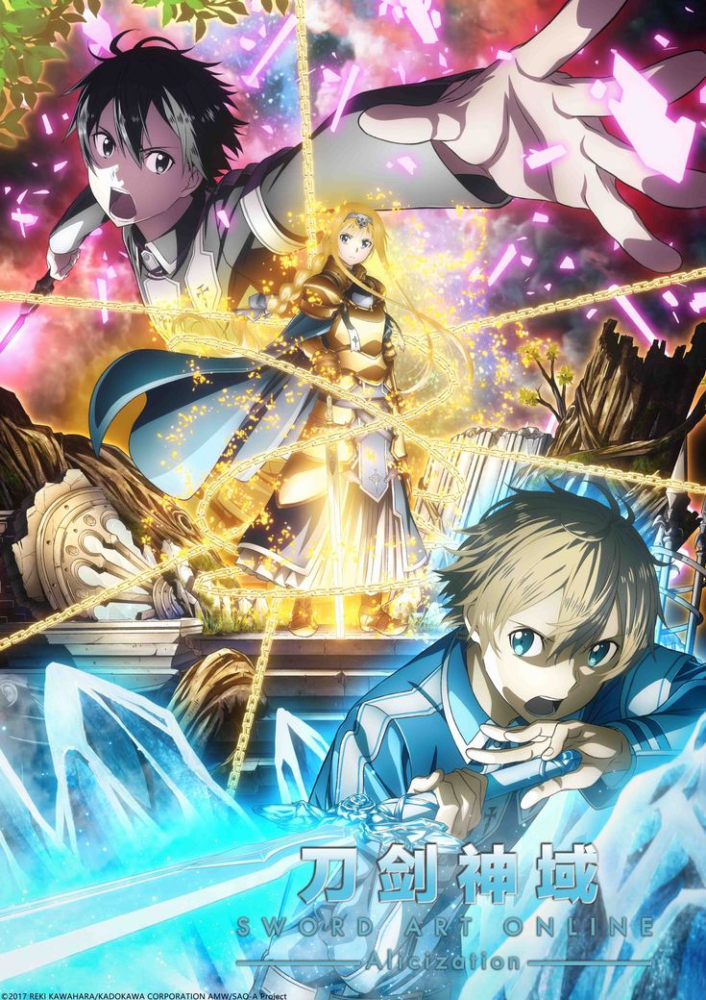
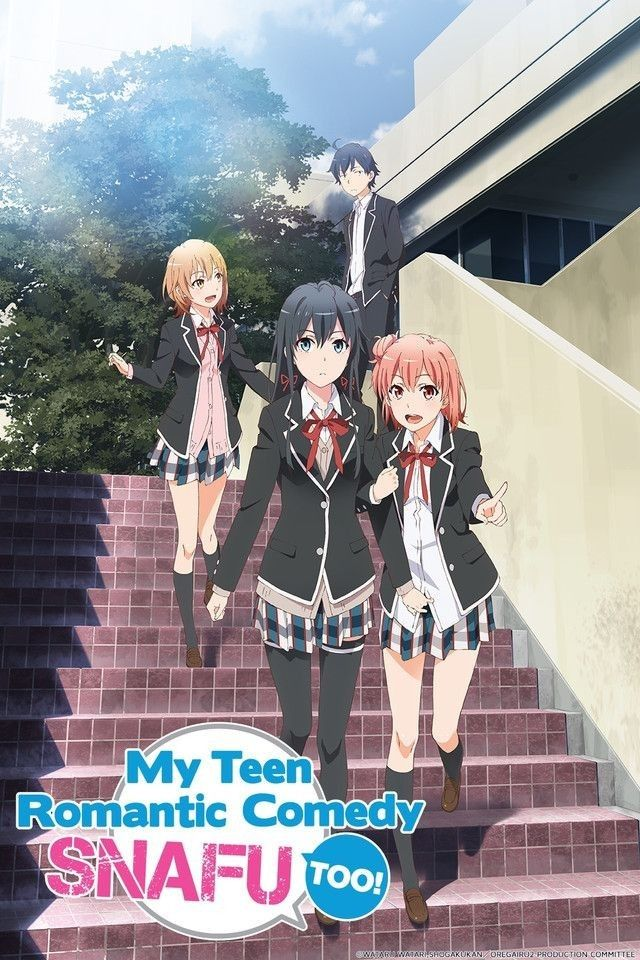
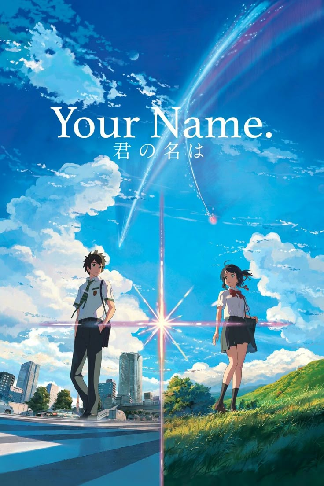
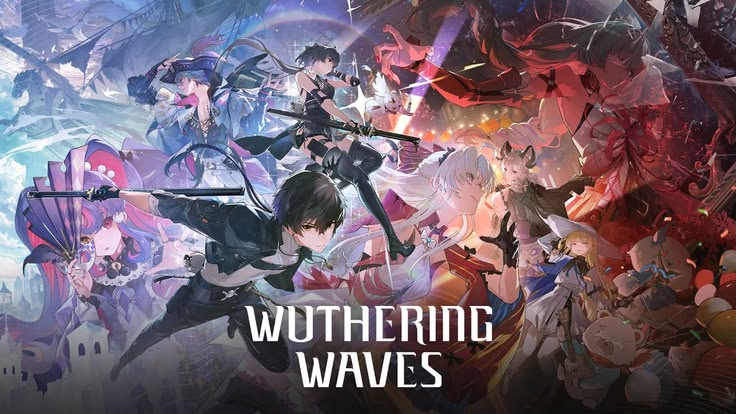
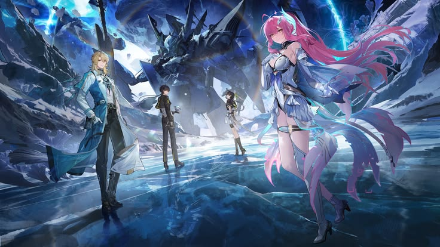
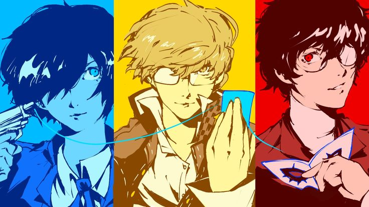
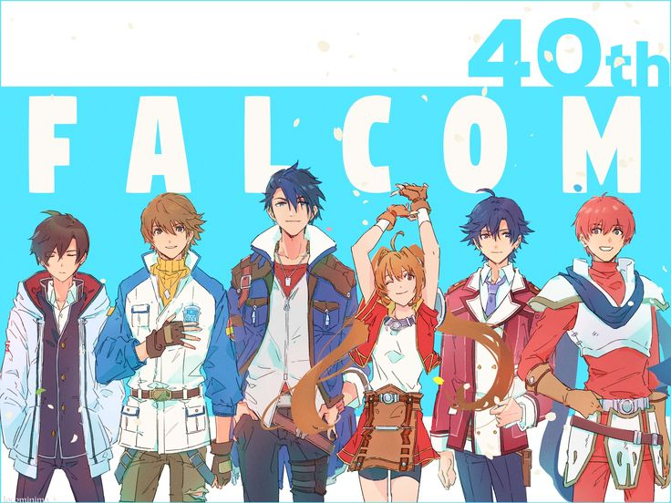

My Interests
" Game + Anime "
These two subjects does not separate in my case. As I found anime to be most enjoyable for me, it somehow affected my preferences in games.
Anime

My Top 3 Anime
| Anime | Description |
|---|---|
 |
Sword Art OnlineSword Art Online is one of my favourite anime because it combines virtual reality technology, action, and adventure. The concept of living inside a game world strongly influenced my interest in gaming and technology. |
 |
My Teen Romantic Comedy SNAFUMy Teen Romantic Comedy SNAFU is an anime that stands out because of its realistic portrayal of friendships, relationships, and personal growth. I enjoy the deep conversations and the unique perspective of the main character, Hikigaya Hachiman. The series teaches valuable lessons about understanding people and overcoming personal struggles, making it both entertaining and meaningful. |
 |
Your NameYour Name is one of the most beautiful anime movies I have ever watched. The stunning animation, emotional storyline, and memorable soundtrack create an unforgettable experience. I particularly enjoy how the film combines romance, fantasy, and mystery while delivering a powerful message about fate, connection, and appreciating the people around us. |
Favorites anime trailer
Sword Art Online: War of Underworld Final
Games

My Top 3 Games
| Game | Description |
|---|---|
 |
Wuthering WavesWuthering Waves is currently one of my favourite games because of its fast-paced combat system, beautiful open world, and engaging character designs. I enjoy exploring the game's environment and mastering different character abilities. The anime-inspired art style and action-oriented gameplay make it a highly enjoyable experience for me. |
 |
Persona seriesThe Persona series is one of my favourite role-playing game franchises because of its excellent storytelling, memorable characters, and unique blend of daily life simulation and dungeon exploration. I enjoy how the games allow players to build relationships with characters while uncovering deeper themes about society, identity, and personal growth. |
 |
Trails seriesThe Trails series is a game franchise that I greatly admire for its rich world-building and interconnected storyline. Every game contributes to a larger narrative, making the experience feel immersive and rewarding. I enjoy learning about the different regions, characters, and political events within the game's universe, which creates a story that feels alive and realistic. |